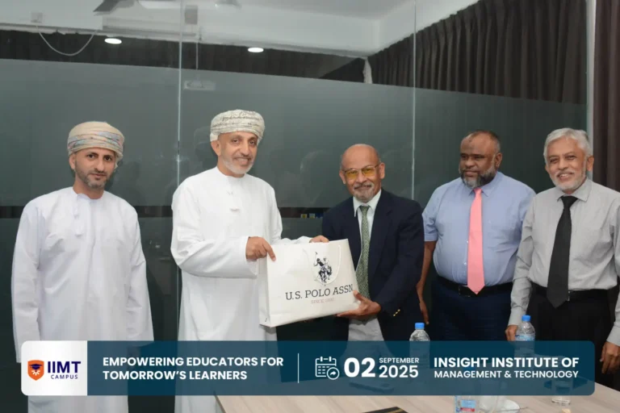

Honored Visit from the Sultanate of Oman — IIMT Campus
We hosted H.E. Ahmed Ali Said Al-Rashdi, Ambassador of Oman to Sri Lanka, and Mr. Said Ali Nasser Al-Harbi for discussions on educational collaboration and employment pathways.
Read MoreA Sri Lankan educational development institution committed to expanding human potential, strengthening national workforce capabilities, and advancing social inclusion.
A Sri Lankan educational development institution committed to expanding human potential, strengthening national workforce capabilities, and advancing social inclusion.
Through our flagship entities — IIMT Campus, the Insight College of Technology (ICT), and a portfolio of education development projects — we create a seamless continuum of learning that empowers individuals at every stage of life.
Our work spans school education development, craft-level vocational training, and community-based learning initiatives designed for groups that have historically faced barriers to quality education.
At the higher education level, we provide internationally recognised degree pathways and tailored executive education in Sri Lanka, ensuring that learners can access world-class qualifications without leaving home.
The Insight Foundation exists to unlock opportunity, elevate communities, and build a future-ready nation where every learner has the chance to thrive.
From a single workshop in Mawanella to a nationally recognised foundation — every number represents a person, a family, a future.
The Insight Foundation (Reg. No: GA00307148) was created to close the opportunity gap faced by marginalised and linguistically diverse communities in Sri Lanka. By integrating higher education, executive education, technical and vocational training, and community development into one accountable ecosystem, we ensure that every learner has a pathway to progress.
"Does this help a young person move from limited prospects to a sustainable livelihood?"
We advance this mission with the collective support of communities across Sri Lanka and our dedicated diaspora organisations.
Explore Our Institutions →To foster a knowledge-based society through educational empowerment of individuals and communities.
A centre of excellence delivering accessible, high-quality education and training, enriched by research and sustainable development principles.
Equity, inclusion and lifelong learning — breaking linguistic, geographic and economic barriers to opportunity.
A seamless continuum of learning — from vocational craft training to internationally recognised degree pathways.

Insight Institute of Management & Technology
Globally aligned, English-medium academic programmes and executive education — delivered in partnership with Pearson (Edexcel), ABE UK, and UCSC. One of Sri Lanka's few non-profit institutions granted Degree Awarding Status (April 2026).

ICT — TVEC-Accredited NVQ Level 3 & 4
Sri Lanka's only non-profit provider of Tamil-medium technical vocational education. Four training centres delivering NVQ-accredited programmes in high-demand sectors.

ICED — Community Capacity Building
Community education, capacity-building, and educator development initiatives that extend the Foundation's reach beyond the campus gate.
Live figures tracking every learner from enrolment to graduation to employment — updated as students move through our institutions and into careers.
Students supported to date, graduation rate, and alumni employment percentage reflect the Foundation's commitment to measurable, lasting outcomes for every individual we serve.
New programme launches, partnership announcements, graduation ceremonies, donor recognitions and institutional milestones.

PartnershipWe hosted H.E. Ahmed Ali Said Al-Rashdi, Ambassador of Oman to Sri Lanka, and Mr. Said Ali Nasser Al-Harbi for discussions on educational collaboration and employment pathways.
Read More IIMT Campus
IIMT Campus
We proudly celebrate the outstanding success of our BIT Semester 2 students, whose hard work and dedication have yielded exceptional results.
Read More IIRC
IIRC
IIMT hosted a training session for volunteer teachers of Vision Dehiyanga, introducing activity-based English teaching methods for Grade 3 students in the Kandy district.
Read MoreWhether you are a prospective student, an international university, a corporate donor, or an individual wishing to support a Zakat-eligible scholarship — there is a place for you in the Insight Foundation's work.
Apply now to IIMT Campus for higher & executive education, or to ICT for NVQ vocational training.
Support a Zakat-eligible scholarship or partner with us to expand access to quality education.
Make a Donation →International universities seeking a transnational education partner in Sri Lanka — let's collaborate.
Partner With Us →